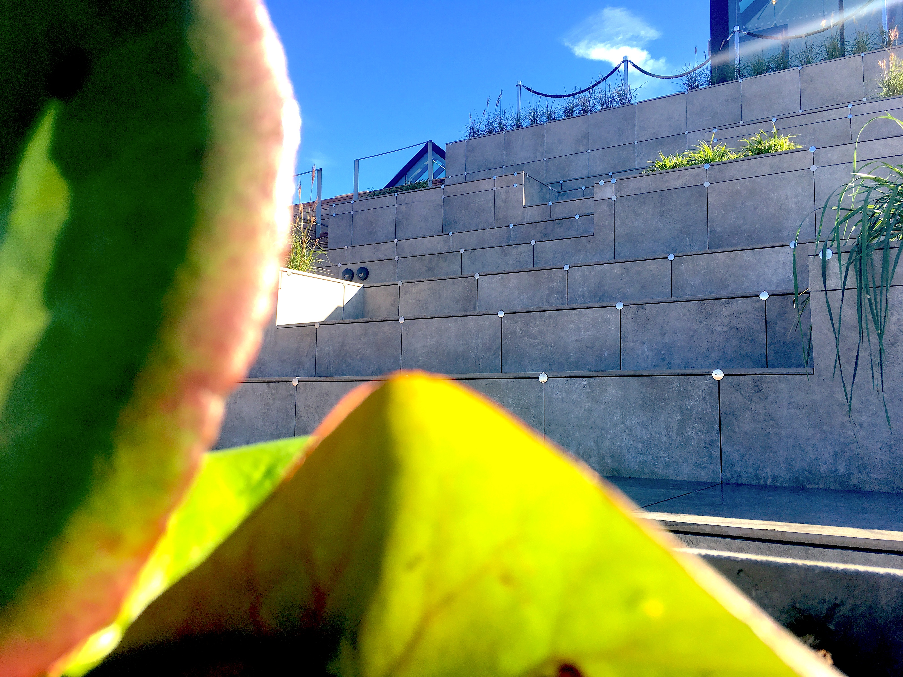

De fedeste oplevesler for unge i Aarhus
Oplev de fedeste steder i Aarhus, uden at skulle bore et hul i økonomien.
De unge studerende som bor i Aarhus, er ikke blot flyttet til byen, udelukkende for at studere, mange af de unge, som flytter til Aarhus hvert år, ønsker også at opleve byen fra andre vinkler end den de oplever på studiet. Aarhus rummer nemlig en speciel karakter med kant, farver, glæder, hygge og ikke mindst oplevelsesrige seværdigheder, som er omfavnet af en rig og speciel storbyskultur. Det vigtigste man kan gøre, for at få den perfekte cocktail af Aarhus, er at finde alle de steder, som netop giver byen sin helt særlige karakter, og de steder har vi på redaktionen forsøgt at finde frem til de sidste to uger.
Salling Rooftop
Det første sted som er værd at besøge, er Salling Rooftop som er et forholdsvist nyt og uudforsket sted. Det helt specielle ved Salling Rooftop, er den specielle stemning stedet skaber, det rummer en hvis form for hygge, som ikke kan skabes på samme måde andre steder. De fleste af os kender garanteret, det at have overstået en lang dag på studiet, og trætheden kryber op over skuldrene. Den oplagte mulighed ville være at tage op på Salling Rooftop med et par kammerater fra studiet, og drikke en kop kaffe. Vores erfaring er, at stedet giver en hel speciel ro og stemning, som gør en fuldstændig afslappet. Enhver studerende vil lynhurtigt falde for stedets charme.
DOKK1
Det andet sted som vi anbefaler men tillægger et besøg, er noget så kedeligt som et bibliotek, men er det nu også så kedeligt endda? Stedet vi taler om, er selvfølgelig DOKK1. Udefra, en stor og grå bygning, indvendig, et helt nyt univers præget af fortid, nutid og fremtid. Hvis du endnu ikke har gået en tur
gennem bygningen, skulle du til at komme afsted! Der går ikke lang tid, før man bliver opslugt af det specielle indvendige design, de mange fancy udstillinger og ting, som foregår inde i hjertet af bygningen. DOKK1 er langt mere end blot et bibliotek. Mange af de nuværende studerende, vil blive kastet ind i en stor lomme, som rummer oceaner af nostalgi, herunder kan blandt andet nævnes, at der er opsat diverse spillemaskiner, ja de goe’ gamle fra spillehallen, der er opsat flere af de ældre spillekonsoller, blandt andre en Nintendo NES, og helt ærligt, hvem elsker ikke den nostalgiske følelse? Hvis du er kommet for at spille fifa, er denne mulighed der også, med flere opsatte Playstation 4 konsoller, som kan benyttes af de besøgende. Derudover, er der også lagt stor fokus på, at de studerende skal kunne komme derned, for at studere sammen med hinanden. Der er opsat borde, sofahjørner og områder, hvor der er gratis WIFI og mulighed for at tilslutte strøm. Stedet er en sand guldgrube for de unge studerende.
Aarhus Streetfood
I en artikel som omhandler fede oplevelser for unge mennesker i Aarhus, kommer man ikke uden om det nok mest kendte spisested i byen, nemlig Aarhus Streetfood. Stedet her rummer unikke rammer båden udenfor og indenfor, og minder mest af alt, om et af de mange madmarkeder man så ofte ser i udlandet. Det specielle ved stederne på denne liste, er at essensen af stederne er, at det er, som at træde ind i et nyt univers, og det opfylder Aarhus Streetfood fuldt ud. Atmosfæren er en oplevelse for sig selv, det føles unik, når man går gennem de små gange mellem de forskellige madboder, og for hver bod, fremtræder en ny og speciel duft af frisklavet mad. Det oplagte sted, at tage hen og få frokost, middagsmad eller aftensmad i weekenden.